This deck is the shell for Thursday's board review at Harbourline Credit Union. Fill it out from the loan write-offs figures sitting in my finance folder: give each quarter its own slide with the write-off total, and end on a slide stating the current Bank of England Bank Rate with the date it took effect, taken from the Bank's own site. Leave the folder with a single zip of the source data next to it.
THINKINGThe task has multiple parts: (1) find finance folder with loan write-off figures, (2) create slides per quarter with totals, (3) add a final slide with Bank of England Bank Rate + effective date from Bank's site, (4) leave a single zip of source data next to the folder. I need to explore the file system first. Let me take a screenshot to see current state, but I should find the finance folder. Let me open a file manager or terminal to locate files.
ACTIONI'll help with this task. Let me start by taking a screenshot to see the current state and then explore what I need to do.
I need to understand the full scope before acting. Let me first locate the finance folder and its source data. I'll open a terminal to explore the file system.
EXECUTED (pyautogui in VM)pyautogui.press("command")
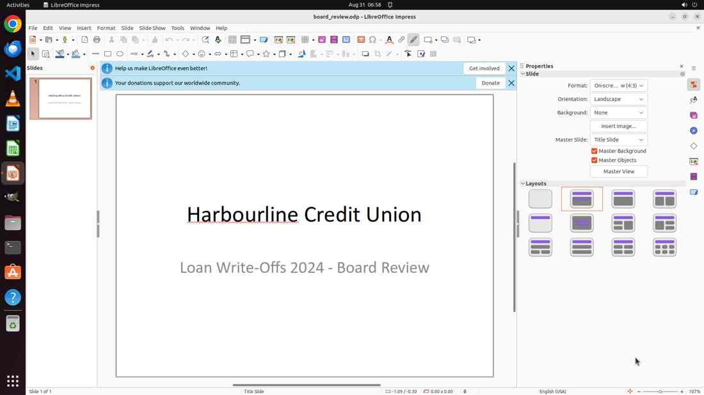
step 2 22:58:30
THINKINGThe super key didn't open anything visible. I need to find the finance folder and the source data. The most reliable way is to open a terminal. There's a terminal icon in the dock on the left side. Let me click it. Looking at the left dock, there's a dark icon around y=447 that looks like a terminal. Let me click that to open a terminal so I can locate the finance folder and understand what data files exist.
ACTIONLet me open a terminal to explore the file system and find the finance folder. I'll click the terminal icon in the dock.
EXECUTED (pyautogui in VM)pyautogui.click(32, 669)
step 3 22:58:57
THINKINGA terminal is open. I need to find the finance folder and the board_review.odp file. Let me search the home directory for these. I'll list the home directory and find the finance folder and the odp file location. I'll run a find command to locate relevant files: the finance folder, any data files (csv, xlsx, etc.), and the board_review.odp file location.
ACTIONThe terminal is open. Let me locate the finance folder, the source data files, and the presentation file.
EXECUTED (pyautogui in VM)pyautogui.click(449, 299)
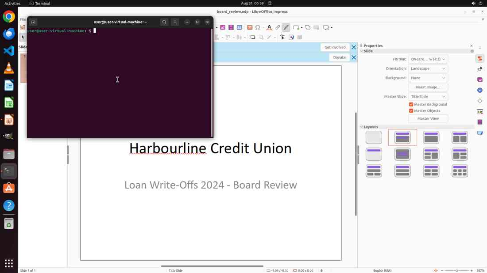
step 4 22:59:19
THINKINGI'll run a find command to locate the finance folder, the board_review.odp, and any data files. This reduces uncertainty about where things are before I act on them. I'll search the home directory broadly for the finance directory and the odp file.
ACTIONLet me search for the finance folder and the presentation file.
EXECUTED (pyautogui in VM)pyautogui.press("return")
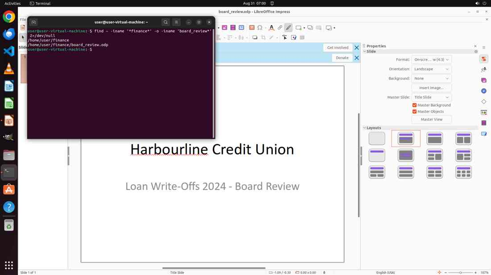
step 6 23:00:58
THINKINGFound: /home/user/finance folder and /home/user/finance/board_review.odp. So the presentation is INSIDE the finance folder. The task says "Leave the folder with a single zip of the source data next to it." "next to it" - next to the presentation, or next to the folder? Re-reading: "Fill it out from the loan write-offs figures sitting in my finance folder... Leave the folder with a single zip of the source data next to it."
"Leave the folder with a single zip of the source data next to it" — this likely means: within the finance folder, consolidate the source data into a single zip. "next to it" is ambiguous. Actually "the folder with a single zip ... next to it" — the zip should be next to the folder? Or next to the odp? Let me interpret: the folder currently has the source data files (possibly multiple). The instruction wants a single zip of the source data. "next to it" - next to the board_review.odp file, i.e., in the same finance folder. So I should zip the source data files into one zip and place it in the finance folder.
Let me first list the finance folder contents to see what source data exists.
ACTIONFound the finance folder at `/home/user/finance` and the presentation inside it. Let me list the folder contents to see the source data.
TOOL CALL<tool_call>
<function=computer_use>
<parameter=action>
type
</parameter>
<parameter=text>
ls -la /home/user/finance/
</parameter>
</function>
</tool_call>
EXECUTED (pyautogui in VM)pyautogui.typewrite("ls -la /home/user/finance/")
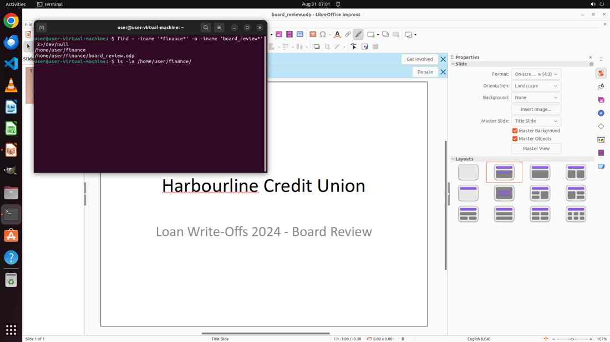
step 7 23:01:24
THINKINGThe command is typed. I need to press Enter to execute and see the folder contents.
EXECUTED (pyautogui in VM)pyautogui.press("return")
step 8 23:02:21
THINKINGThe finance folder contains:
- board_review.odp (the deck)
- .~lock.board_review.odp# (lock file - deck is open)
- writeoffs.csv (the source data, 485 bytes)
So there's a single source data file: writeoffs.csv. Let me view its contents to get the quarterly write-off totals. I'll cat the file.
ACTIONThe finance folder contains `board_review.odp` and the source data `writeoffs.csv`. Let me view the CSV contents to get the quarterly figures.
EXECUTED (pyautogui in VM)pyautogui.typewrite("cat /home/user/finance/writeoffs.csv")
step 9 23:02:57
THINKINGThe cat command was typed with a trailing newline in my type action, but the output hasn't appeared yet. Let me press Enter to be sure it executes.
EXECUTED (pyautogui in VM)pyautogui.press("return")
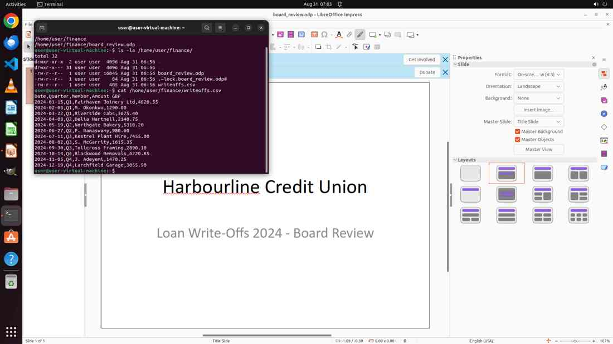
step 10 23:04:05
THINKINGNow I can read the CSV data:
Date,Quarter,Member,Amount GBP
2024-01-15,Q1,Farthaven Joinery Ltd,4820.55
2024-02-03,Q1,M. Okonkwo,1290.00
2024-03-22,Q1,Riverside Cabs,3675.40
2024-04-08,Q2,Delia Hartnell,2140.75
2024-05-19,Q2,Northgate Bakery,5310.20
2024-06-27,Q2,P. Ramaswamy,980.60
2024-07-11,Q3,Kestrel Plant Hire,7455.00
2024-08-02,Q3,S. McGarrity,1615.35
2024-09-30,Q3,Tollcross Framing,2890.10
2024-10-14,Q4,Blackwood Removals,6220.85
2024-11-05,Q4,J. Adeyemi,1470.25
2024-12-19,Q4,Larchfield Garage,3055.90
Rather than manually sum (risk of error), I should compute the quarterly totals with a script to be precise. Let me use awk to sum by quarter. This reduces error risk.
ACTIONI can now read all the data. Let me compute the exact quarterly totals using awk to avoid arithmetic errors.
TOOL CALL<tool_call>
<function=computer_use>
<parameter=action>
type
</parameter>
<parameter=text>
awk -F, 'NR>1{s[$2]+=$4} END{for(q in s) printf "%s %.2f\n", q, s[q]}' /home/user/finance/writeoffs.csv
</parameter>
</function>
</tool_call>
EXECUTED (pyautogui in VM)pyautogui.typewrite("awk -F, 'NR>1{s[$2]+=$4} END{for(q in s) printf \"%s %.2f\\n\", q, s[q]}' /home/user/finance/writeoffs.csv")
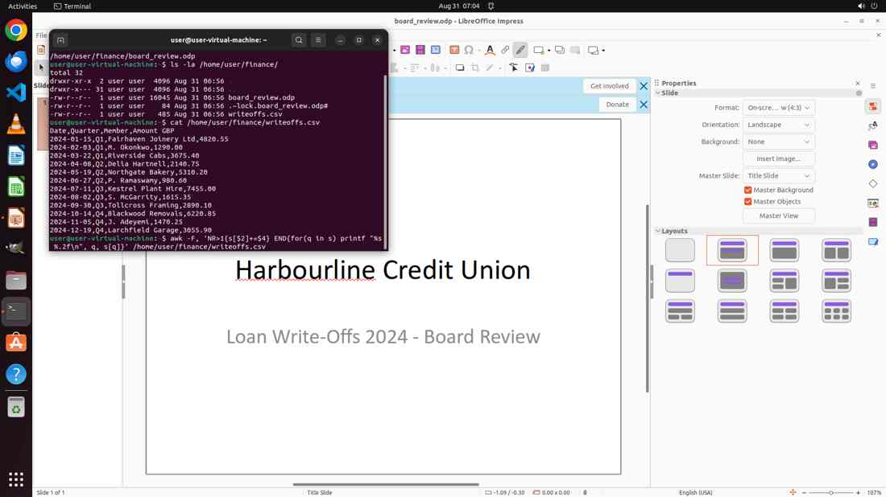
step 11 23:05:03
THINKINGThe command was typed with a trailing newline, but output hasn't appeared. Let me press Enter to execute.
EXECUTED (pyautogui in VM)pyautogui.press("return")
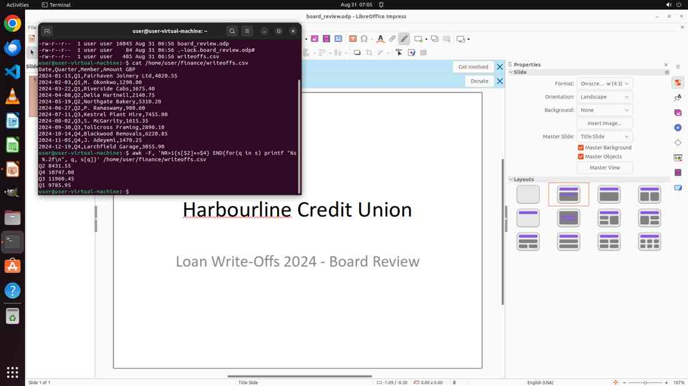
step 12 23:05:55
THINKINGThe awk output gives the quarterly totals:
Q1 9785.95
Q2 8431.55
Q3 11960.45
Q4 10747.00
Let me verify Q1: 4820.55 + 1290.00 + 3675.40 = 9785.95 ✓
Q2: 2140.75 + 5310.20 + 980.60 = 8431.55 ✓
Q3: 7455.00 + 1615.35 + 2890.10 = 11960.45 ✓
Q4: 6220.85 + 1470.25 + 3055.90 = 10747.00 ✓
Now I have the data. I need the Bank of England Bank Rate with the effective date from the Bank's own site. I need to open a browser and go to bankofengland.co.uk to find the current Bank Rate and its effective date.
Plan for the rest of the task:
1. Get BoE Bank Rate + effective date from bankofengland.co.uk (via Chrome).
2. Build the slides in Impress: Q1, Q2, Q3, Q4 slides with totals, then a final slide with Bank Rate + effective date.
3. Save the odp.
4. Zip the source data (writeoffs.csv) into a single zip in the finance folder.
Let me first get the Bank of England rate. Open Chrome. Actually let me use the terminal with curl to fetch the page quickly, which is faster and more reliable than browsing. But the task says "taken from the Bank's own site" - I should verify on the actual site. Let me use curl to fetch the BoE rates page. The page is https://www.bankofengland.co.uk/monetary-policy/the-bank-rate. Let me curl it and grep for the rate.
Actually, the BoE site may block curl or use JS. Let me try curl first; if it fails, I'll use Chrome. Let me try.
ACTIONI have the quarterly totals: Q1 £9,785.95, Q2 £8,431.55, Q3 £11,960.45, Q4 £10,747.00. Now I need the current Bank of England Bank Rate and its effective date from the Bank's own site. Let me fetch it.
TOOL CALL<tool_call>
<function=computer_use>
<parameter=action>
type
</parameter>
<parameter=text>
curl -s -A "Mozilla/5.0" https://www.bankofengland.co.uk/monetary-policy/the-bank-rate -o /tmp/boe.html; grep -o -E "Bank Rate[^<]{0,120}" /tmp/boe.html | head
</parameter>
</function>
</tool_call>
EXECUTED (pyautogui in VM)pyautogui.typewrite("curl -s -A \"Mozilla/5.0\" https://www.bankofengland.co.uk/monetary-policy/the-bank-rate -o /tmp/boe.html; grep -o -E \"Bank Rate[^<]{0,120}\" /tmp/boe.html | head")
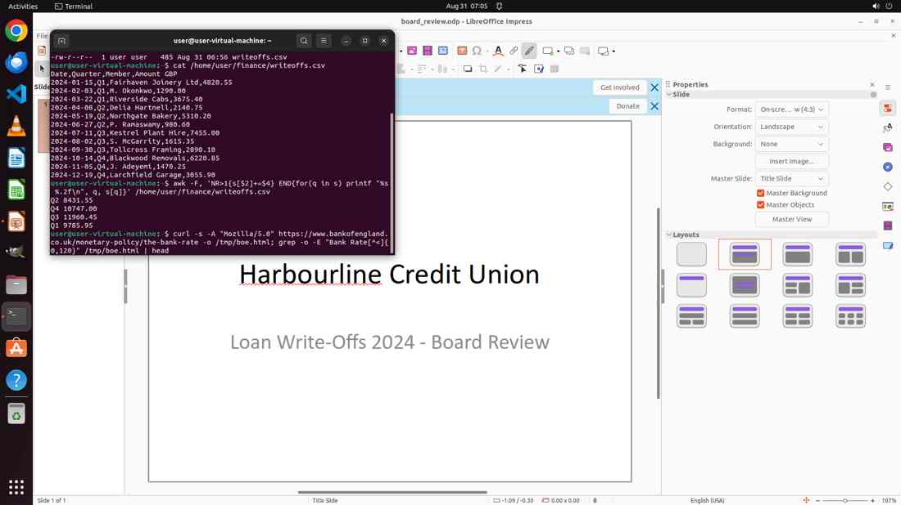
step 13 23:06:20
THINKINGThe command was typed with a trailing newline. Let me press Enter to run it and see the output.
EXECUTED (pyautogui in VM)pyautogui.press("return")
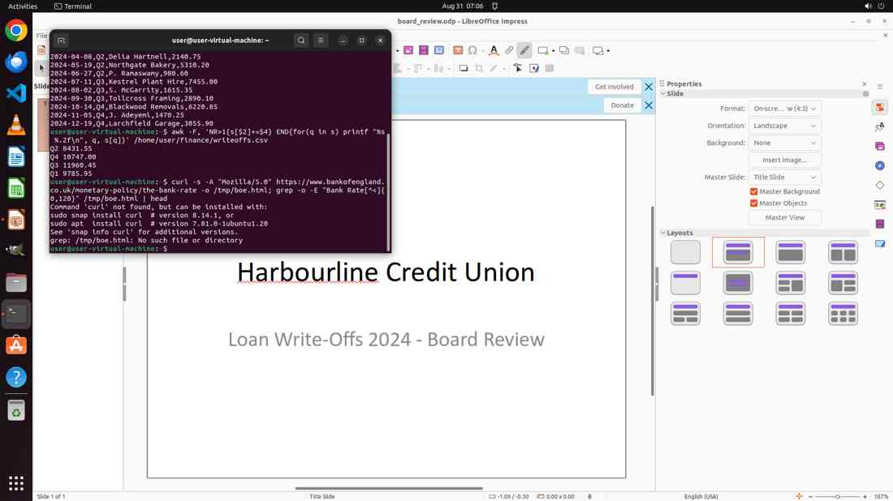
step 14 23:07:12
THINKINGcurl is not installed. I have two options: install curl (sudo apt install curl), or use the browser (Chrome) to view the BoE site directly. The task emphasizes "taken from the Bank's own site," so using the browser is the most faithful approach and avoids installing packages. Let me open Chrome and navigate to the Bank Rate page. I'll click the Chrome icon in the dock (top-left, the colored circle at ~22,44).
ACTIONcurl isn't installed. I'll use the Chrome browser to view the Bank of England's own site directly. Let me open Chrome.
EXECUTED (pyautogui in VM)pyautogui.typewrite("https://www.bankofengland.co.uk/monetary-policy/the-bank-rate")
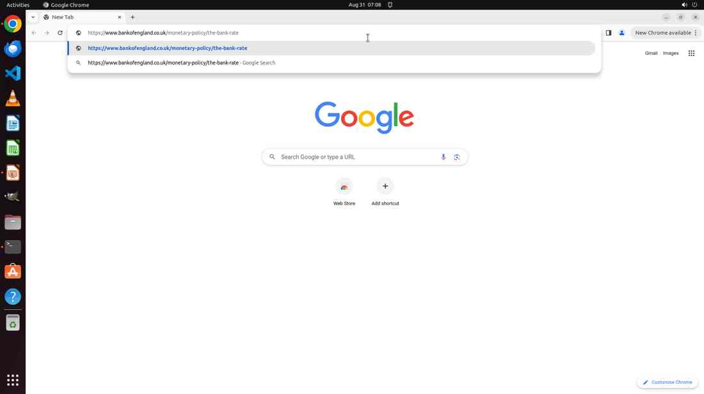
step 17 23:09:35
THINKINGThe URL is in the address bar with an autocomplete dropdown. The trailing newline may not have submitted because a dropdown appeared. Let me press Enter to navigate.
EXECUTED (pyautogui in VM)pyautogui.press("return")
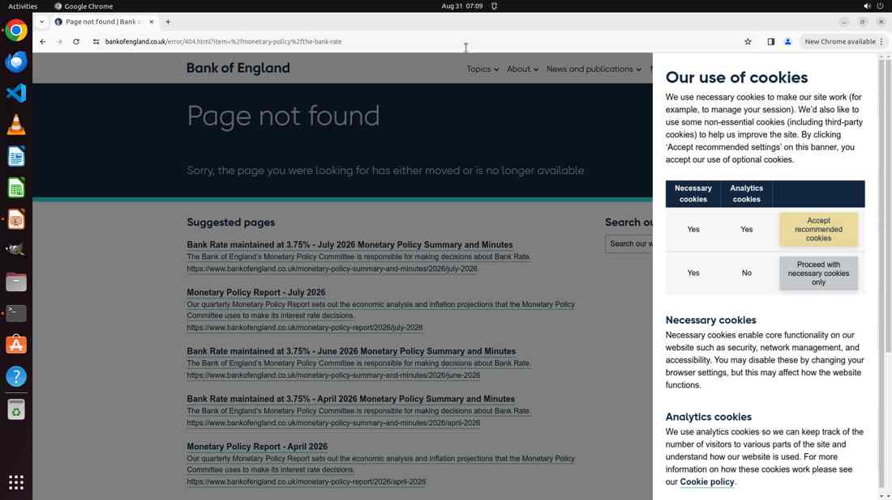
step 18 23:10:23
THINKINGThe direct URL gave a 404 (page moved), but the Bank of England site is now loading. A cookie banner is showing. The suggested pages show "Bank Rate maintained at 3.75% - July 2026 Monetary Policy Summary and Minutes." This is a strong signal that the current Bank Rate is 3.75%. But I should get the definitive "current Bank Rate" and its effective date from the Bank's own dedicated page. The correct page is likely under Monetary Policy > The Bank Rate. Let me first dismiss the cookie banner (Proceed with necessary cookies only, or Accept), then navigate to the proper Bank Rate page.
Let me click "Proceed with necessary cookies only" to dismiss without accepting analytics, then find the correct page.
ACTIONThe Bank of England site loaded (the exact page moved, but I can see the current Bank Rate is 3.75%). Let me dismiss the cookie banner first.
EXECUTED (pyautogui in VM)pyautogui.click(1760, 588)
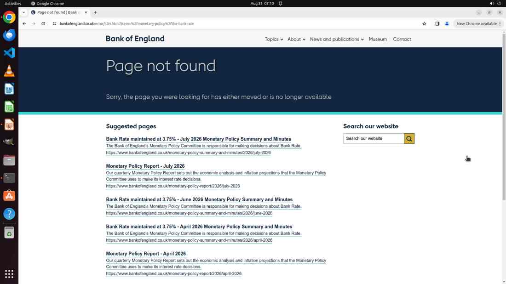
step 19 23:10:59
THINKINGThe cookie banner is dismissed. Now I need the definitive current Bank Rate and its effective date. The suggested pages show "Bank Rate maintained at 3.75% - July 2026." The proper "The Bank Rate" page must exist at a different URL. Let me use the site's search to find "The Bank Rate" page. I'll type in the search box "Bank Rate" and search. Actually, a more reliable target is the dedicated Bank Rate page. Let me search the site.
ACTIONCookie banner dismissed. Let me search the Bank of England site for the dedicated "Bank Rate" page to confirm the current rate and its effective date.
EXECUTED (pyautogui in VM)pyautogui.click(1410, 524)
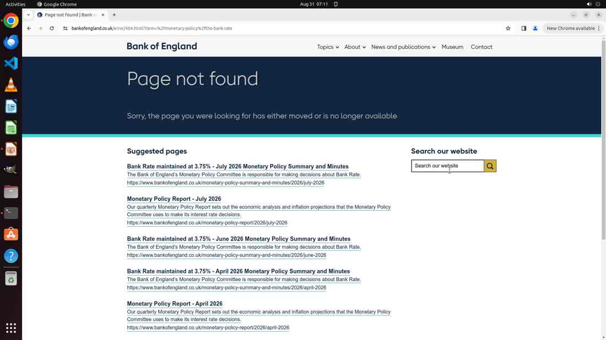
step 20 23:11:42
THINKINGThe search box is focused. Rather than search (which may give many results), the most authoritative page for "the current Bank Rate with the date it took effect" is the dedicated Bank Rate page. The BoE's canonical page is at /monetary-policy/the-bank-rate which 404'd. The correct current URL might be slightly different. Let me search for "Bank Rate" to find the right page.
TOOL CALL<tool_call>
<function=computer_use>
<parameter=action>
type
</parameter>
<parameter=text>
Bank Rate
</parameter>
</function>
</tool_call>
EXECUTED (pyautogui in VM)pyautogui.typewrite("Bank Rate")
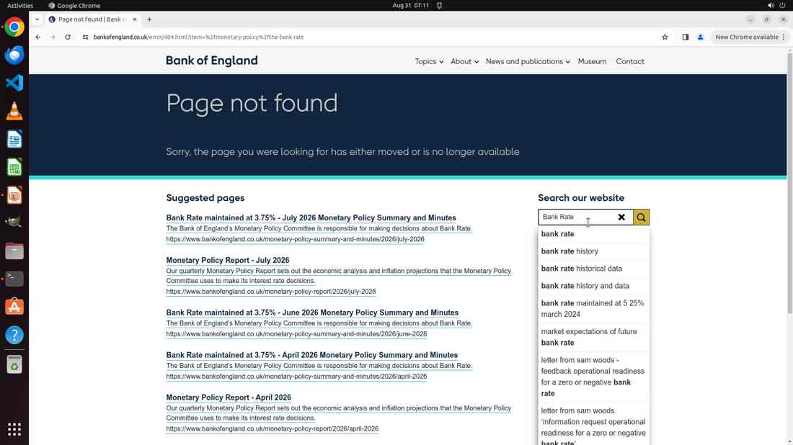
step 21 23:12:28
THINKINGAutocomplete suggestions appeared. Let me just submit the search by clicking the search button to see full results and find the dedicated "The Bank Rate" page. I'll press Enter.
EXECUTED (pyautogui in VM)pyautogui.press("return")
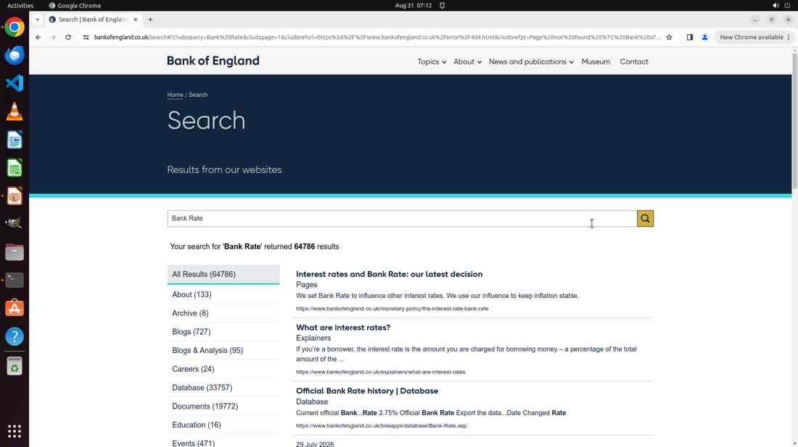
step 22 23:13:34
THINKINGThe first result is the authoritative page: "Interest rates and Bank Rate: our latest decision" at bankofengland.co.uk/monetary-policy/the-interest-rate-bank-rate. That's the dedicated page for the current Bank Rate. Let me click it.
ACTIONThe top result is the authoritative page "Interest rates and Bank Rate: our latest decision". Let me open it.
EXECUTED (pyautogui in VM)pyautogui.click(935, 659)
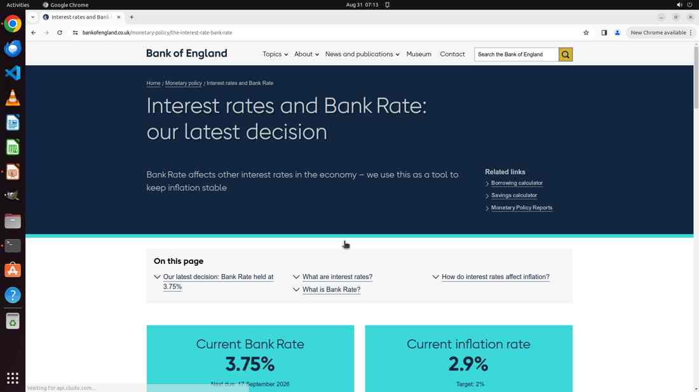
step 23.1 23:14:54
THINKINGThis is the authoritative page. It shows:
- "Our latest decision: Bank Rate held at 3.75%"
- "Current Bank Rate: 3.75%"
I need the date it took effect. There's text under Current Bank Rate that appears cut off ("Next due: 17 September 2026"). I need to scroll down to find the "date it took effect" / effective date. The effective date of the current 3.75% rate. Let me scroll down to read the details.
ACTIONThis confirms the Current Bank Rate is 3.75%. I need the date it took effect. Let me scroll down to find that detail.
EXECUTED (pyautogui in VM)pyautogui.moveTo(960, 600)
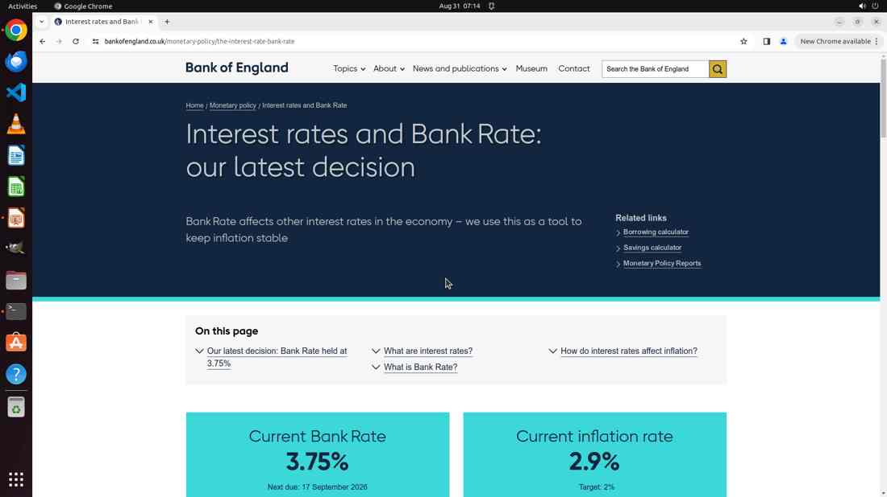
step 23.2 23:14:58
same model call as the previous action
EXECUTED (pyautogui in VM)pyautogui.scroll(-5)
step 24.1 23:16:06
THINKINGI see "Current Bank Rate 3.75%", "Next due: 17 September 2026", "Our latest decision: Bank Rate held at 3.75%", and "Published on 30 July 2026". The "published" date (30 July 2026) is when the decision was published/announced, not necessarily when the rate "took effect". I need the specific date the 3.75% rate took effect. Let me scroll down further to find the exact effective date text (the BoE usually states "from [date]" in the decision text).
ACTIONI can see the decision was published 30 July 2026. I need the exact effective date the rate took effect. Let me scroll further to find the "from [date]" statement.
EXECUTED (pyautogui in VM)pyautogui.moveTo(960, 600)
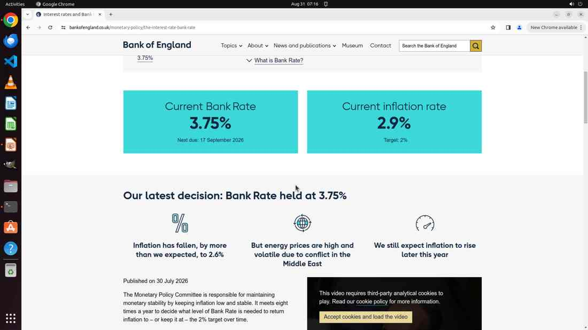
step 24.2 23:16:09
same model call as the previous action
EXECUTED (pyautogui in VM)pyautogui.scroll(-5)
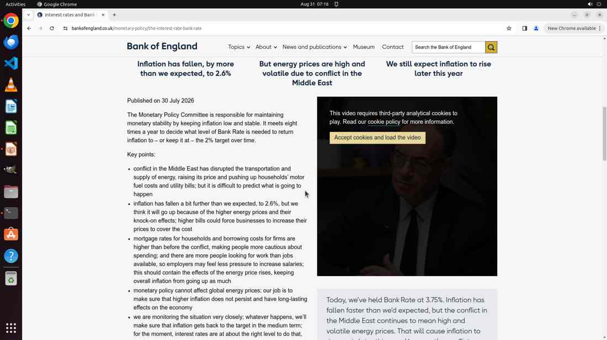
step 25 23:17:38
THINKINGThe text says "Today, we've held Bank Rate at 3.75%." and "Published on 30 July 2026." So the current rate of 3.75% is being "held" - meaning it was already 3.75% before. The date it "took effect" would be when the rate was last set to 3.75%, which could be an earlier date.
The task asks for "the current Bank of England Bank Rate with the date it took effect." This is a bit ambiguous. Two reasonable interpretations:
1. The date the current decision was published / took effect = 30 July 2026.
2. The date the 3.75% level was first set.
The most natural and authoritative answer from the Bank's own page: the current rate is 3.75% and the decision (held at 3.75%) is dated/published 30 July 2026. The Bank's "Our latest decision" page represents the current effective rate and its date. The Bank's official "Official Bank Rate history" database showed "29 July 2026" as the change date earlier in search results.
Hmm, there's a discrepancy: search result showed "29 July 2026" (Official Bank Rate history database) while this page says "Published on 30 July 2026". The 29 July 2026 is the MPC decision meeting date (decisions take effect on the decision date). Actually BoE MPC meetings: the decision date is when the rate change/effective date. The "published" press release is often the next day.
To get the precise "date it took effect," the most authoritative is the Official Bank Rate history database, which lists the "Date Changed" = when the rate took effect. Let me check that database to be precise, since the task specifically says "the date it took effect." Let me open the Bank Rate database page to confirm the effective date. I'll navigate to the database URL found earlier.
Actually, let me reconsider. The current page is the "latest decision" page. It states the current rate is 3.75% and published 30 July 2026. The rate was "held" at 3.75%, meaning 3.75% has been in effect since it was last changed. If it was held (unchanged) at this meeting, the "date it took effect" is the earlier date when it was set to 3.75%.
The task wants "the date it took effect" — this means when the 3.75% level became effective. I should check the Bank Rate history database for the exact date 3.75% was set/effective. Let me navigate to the official Bank Rate database to find the "Date Changed" for the current 3.75% level.
ACTIONThe rate was "held at 3.75%" (published 30 July 2026). Since it was held, I should confirm the exact date the 3.75% level took effect from the Bank's official Bank Rate history database. Let me open that.
EXECUTED (pyautogui in VM)pyautogui.typewrite("https://www.bankofengland.co.uk/boeapps/database/Bank-Rate.asp")
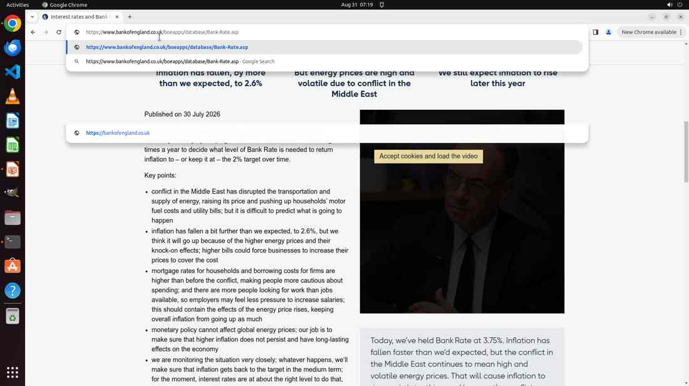
step 27 23:20:38
THINKINGThe URL is in the address bar with an autocomplete dropdown. The trailing newline didn't submit due to the dropdown. Let me press Enter to navigate.
EXECUTED (pyautogui in VM)pyautogui.press("return")
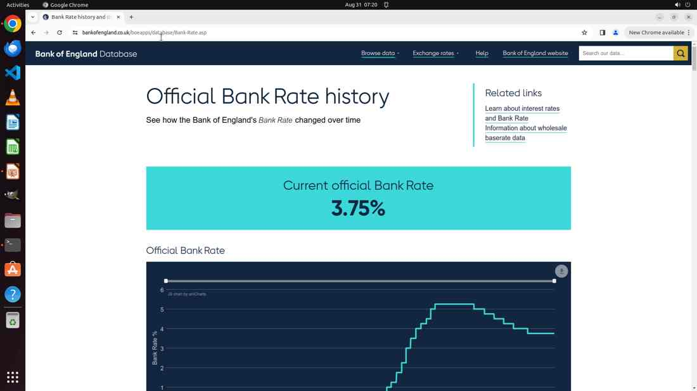
step 28.1 23:21:58
THINKINGThis is the "Official Bank Rate history" page showing "Current official Bank Rate: 3.75%". Below is a chart. I need the table with "Date Changed" for the 3.75% level — the date it took effect. Let me scroll down to find the table of dates.
ACTIONThis is the official history page confirming 3.75%. Let me scroll down to find the table with the exact "Date Changed" for the current rate.
EXECUTED (pyautogui in VM)pyautogui.moveTo(960, 600)
step 28.2 23:22:01
same model call as the previous action
EXECUTED (pyautogui in VM)pyautogui.scroll(-8)
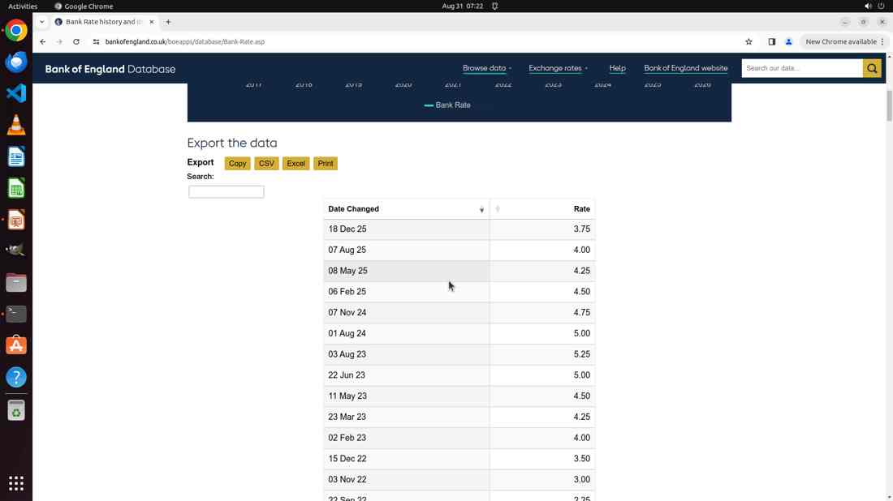
step 29 23:23:56
THINKINGNow I have the authoritative table. The top row is:
Date Changed: 18 Dec 25 | Rate: 3.75
So the current Bank Rate of 3.75% took effect on 18 December 2025 (18 Dec 25). This is the "Date Changed" - the date the 3.75% level became effective. Subsequent MPC meetings (e.g., 30 July 2026) merely "held" it at 3.75%, but the level itself has been in effect since 18 Dec 2025.
This resolves the ambiguity precisely using the Bank's own database. So:
- Current Bank Rate: 3.75%
- Date it took effect: 18 December 2025
Now I have all data:
Q1: £9,785.95
Q2: £8,431.55
Q3: £11,960.45
Q4: £10,747.00
Bank Rate: 3.75%, took effect 18 December 2025
Now I need to build the slides in Impress. The deck currently has:
- Slide 1: "Harbourline Credit Union" / "FY2025 Loan Write-off Review" (keep)
- Slide 2: "Add one slide per quarter..." (the instruction placeholder - replace with quarter slides)
The task: "give each quarter its own slide with the write-off total, and end on a slide stating the current Bank of England Bank Rate with the date it took effect."
So I need 4 quarter slides + 1 bank rate slide = 5 content slides. The placeholder slide 2 should become the first quarter slide (or I can use it). Best approach: Replace slide 2's content with Q1, then add 3 more slides for Q2-Q4, then add the final Bank Rate slide.
Let me go to Impress. It's already open (I saw the title bar "board_review.odp - LibreOffice Impress"). Let me switch to it. I'll use the taskbar / alt+tab, or click. Let me switch windows. Actually the Impress window is behind Chrome. Let me click the Impress icon in the dock (the orange one at ~22,316).
I'll use the Outline view which is the fastest way to add text slides. Actually, let me think about the cleanest approach. The deck uses a title slide layout. For content slides I want title + body.
Approach: Use the Outline view (View > Outline) to quickly type all titles and bullets. But the existing slide 2 is a placeholder with a specific text box. In Outline view, I can see and edit titles and content. This is efficient.
Let me switch to Impress first.
ACTIONI now have the definitive answer from the Bank's own database: the current Bank Rate of **3.75% took effect on 18 December 2025** (subsequent meetings merely "held" it).
I have all the data I need:
- Q1: £9,785.95 · Q2: £8,431.55 · Q3: £11,960.45 · Q4: £10,747.00
- Bank Rate: 3.75%, effective 18 December 2025
Now let me switch to Impress to build the slides.
EXECUTED (pyautogui in VM)pyautogui.click(32, 473)
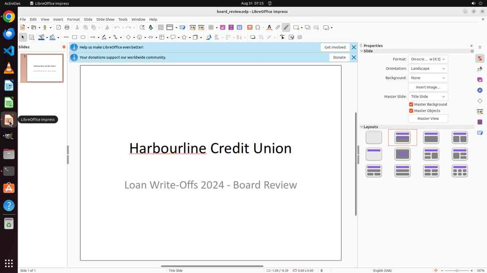
step 30 23:25:01
THINKINGImpress is now in front. The slide title is "Harbourline Credit Union" / subtitle "Loan Write-Offs 2024 - Board Review". The slide panel shows only "Slide 1 of 1" - so actually there is only ONE slide, not two. The earlier screenshot showed a slide 2 in the panel, but that was from a different view. Wait, the first screenshot showed two slides in the panel. Now it shows "Slide 1 of 1". Let me look — the slide panel shows only one slide thumbnail. Hmm. Actually the initial screenshot did show two thumbnails (1 and 2). But now it says "Slide 1 of 1".
Wait, maybe the initial screenshot was a different state, or the second slide was the "Add one slide per quarter" one. Let me close the notification bars and check the slide panel. The status bar says "Slide 1 of 1", meaning there's only one slide now. That's odd. Let me close the info bars first, then look at the slide panel carefully.
Actually, re-examining: the first screenshot's slide panel showed slide 1 (title) and slide 2 (with "Add one slide per quarter..." text). But now status says "Slide 1 of 1". Perhaps the view got reset. Let me close the notification banners and scroll the slide panel to verify.
Let me close both info bars (X buttons at 929,124 and 929,151).
ACTIONImpress is in front. Let me close the notification banners first, then verify how many slides exist.
EXECUTED (pyautogui in VM)pyautogui.click(1391, 184)
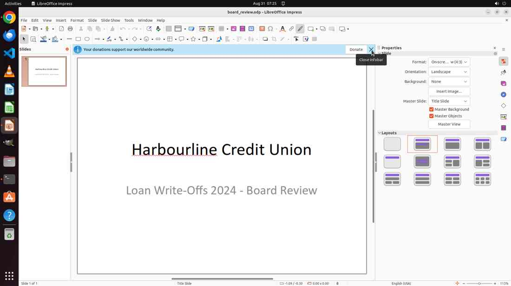
step 31 23:25:45
THINKINGOnly the first info bar closed; a second one ("Your donations...") remains. The slide panel shows only one slide (Slide 1 of 1). So the deck actually only has ONE slide currently — the title slide. The initial screenshot's second thumbnail must have been a rendering artifact or I misread; the status bar clearly says "Slide 1 of 1".
Wait — the very first screenshot at the top of the task showed TWO slide thumbnails (slide 1 title, slide 2 with "Add one slide per quarter..."). But now it shows one. This is contradictory. Let me close the remaining info bar and re-check. It's possible the file has one slide and the "Add one slide per quarter" text was actually a placeholder that I'm now misremembering.
Let me close the second info bar and look carefully.
EXECUTED (pyautogui in VM)pyautogui.click(1391, 184)
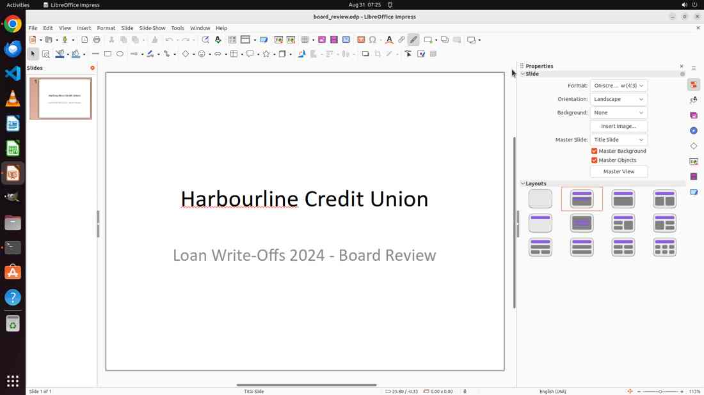
step 32 23:27:09
THINKINGNow both info bars are closed. The slide panel clearly shows only ONE slide ("Slide 1 of 1"). So the deck currently has just the title slide. The "Add one slide per quarter..." text I saw in the very first screenshot must have been on a second slide that no longer exists, OR the first screenshot was showing a different/earlier state.
Regardless, the current state is: 1 title slide. I need to create 4 quarter slides + 1 bank rate slide = 5 new slides.
The cleanest approach: use the Outline view to quickly build all the content slides. In Outline view, slide 1's title is "Harbourline Credit Union". I can add new slides by pressing Enter at the title level and typing. Let me use View > Outline.
Actually, let me reconsider. The title slide uses a "Title Slide" master with a subtitle. In Outline view, slide 1 would show title "Harbourline Credit Union" and the subtitle might appear as a bullet. When I add new slides in outline, they use the default layout with title + content.
Let me use Outline view for speed. View menu > Outline.
Plan in outline:
- Slide 1 title: "Harbourline Credit Union" (keep)
- Slide 2: "Q1 Loan Write-offs" -> body "Total write-offs: £9,785.95"
- Slide 3: "Q2 Loan Write-offs" -> "Total write-offs: £8,431.55"
- Slide 4: "Q3 Loan Write-offs" -> "Total write-offs: £11,960.45"
- Slide 5: "Q4 Loan Write-offs" -> "Total write-offs: £10,747.00"
- Slide 6: "Bank of England Bank Rate" -> "Current Bank Rate: 3.75%, effective from 18 December 2025"
In outline view, I need to be careful: the title slide's subtitle "Loan Write-Offs 2024 - Board Review" might show as a bullet under slide 1. That's fine to keep.
Let me open View > Outline.
ACTIONThe deck currently has just the one title slide. I'll use the Outline view to efficiently build the five content slides (four quarters plus the Bank Rate slide). Let me open it via the View menu.
EXECUTED (pyautogui in VM)pyautogui.click(205, 125)
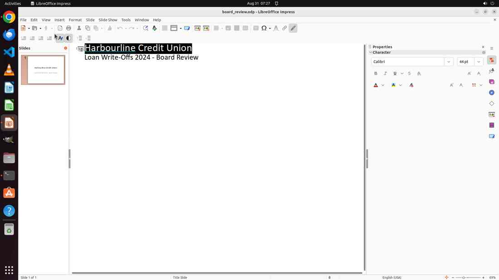
step 34 23:28:33
THINKINGNow in Outline view. I can see:
- Slide 1 (level 1/title): "Harbourline Credit Union"
- Bullet (level 2): "Loan Write-Offs 2024 - Board Review"
The subtitle appears as a level-2 bullet under slide 1. Now I need to place the cursor at the end of the bullet line "Loan Write-Offs 2024 - Board Review", then press Enter to create a new line (which will be a level-2 bullet), then press Shift+Tab to promote it to a title (new slide 2), and type the Q1 title. Then Enter, Tab to demote to bullet, type body. Then Enter, Shift+Tab to promote to new slide title, etc.
Let me click at the end of the "Loan Write-Offs 2024 - Board Review" line to place cursor there. I'll click right after "Review" at around (508, 146).
Then the sequence of keystrokes:
1. Click end of line 2.
2. Press End to ensure at end.
3. Enter -> new level-2 bullet line (under slide 1)
4. Shift+Tab -> promote to level 1 = new slide 2 title
5. type "Q1 Loan Write-offs"
6. Enter -> new level-1 title line (slide 3 title placeholder) — wait, Enter after a title line creates a new title line (level 1). I need a bullet. So:
Actually after typing a title and pressing Enter, the new line is at the same level (title, level 1) which would start a new slide. I need to Tab to demote to level 2 (bullet) for the body.
7. So: type "Q1 Loan Write-offs", Enter (now level-1 title for slide 3), Tab (demote to level 2 = body bullet of slide 2), type "Total write-offs: £9,785.95".
8. Enter (new bullet level 2, still slide 2), Shift+Tab (promote to level 1 = new slide 3 title), type "Q2 Loan Write-offs".
9. Enter, Tab, type "Total write-offs: £8,431.55".
10. Enter, Shift+Tab, type "Q3 Loan Write-offs".
11. Enter, Tab, type "Total write-offs: £11,960.45".
12. Enter, Shift+Tab, type "Q4 Loan Write-offs".
13. Enter, Tab, type "Total write-offs: £10,747.00".
14. Enter, Shift+Tab, type "Bank of England Bank Rate".
15. Enter, Tab, type "Current Bank Rate: 3.75% (effective from 18 December 2025)".
Let me be careful about the £ symbol. Typing "£" via the type action should work since it's a Unicode character and the type action sends the literal string. LibreOffice should accept it. Let me use "£".
I'll do this in one batched sequence. First click at end of the subtitle line and press End.
Let me batch: click at (508,146), then key End, then Enter, Shift+Tab, type title, etc. All in one call.
ACTIONNow in Outline view. I'll place the cursor at the end of the subtitle line, then build all five content slides using Enter/Tab/Shift+Tab to set the title and body levels.
EXECUTED (pyautogui in VM)pyautogui.click(761, 218)
step 35 23:29:25
THINKINGThe cursor is now in the subtitle line (font shows 32pt, confirming it's the body-level bullet). I'll press End to go to end of line, then build all slides.
Sequence:
- End
- Enter (new bullet line, level 2)
- shift+Tab (promote to level 1 = new slide 2 title)
- type "Q1 Loan Write-offs"
- Enter (level 1 title = new slide 3)
- Tab (demote to level 2 = body of slide 2)
- type "Total write-offs: £9,785.95"
- Enter (level 2 bullet)
- shift+Tab (promote to level 1 = new slide 3 title)
- type "Q2 Loan Write-offs"
- Enter
- Tab
- type "Total write-offs: £8,431.55"
- Enter
- shift+Tab
- type "Q3 Loan Write-offs"
- Enter
- Tab
- type "Total write-offs: £11,960.45"
- Enter
- shift+Tab
- type "Q4 Loan Write-offs"
- Enter
- Tab
- type "Total write-offs: £10,747.00"
- Enter
- shift+Tab
- type "Bank of England Bank Rate"
- Enter
- Tab
- type "Current Bank Rate: 3.75% (effective from 18 December 2025)"
I'll batch all this in one call. I'll use key for End, Return, Tab, shift+Tab and type for text.
ACTIONThe cursor is on the subtitle line (32pt body level). I'll now type all five content slides in one batched sequence, using Enter/Tab/Shift+Tab to control title vs. body levels.
THINKINGCursor is at end of the subtitle line. Now I'll batch the full sequence to create all 5 slides. Let me carefully order the key presses and typing.
After Enter: new line at level 2 (bullet).
shift+Tab: promote to level 1 -> becomes slide 2 title.
type "Q1 Loan Write-offs"
Enter -> new line level 1 (would be slide 3 title)
Tab -> demote to level 2 -> becomes body bullet of slide 2
type "Total write-offs: £9,785.95"
Enter -> new bullet level 2 (still slide 2)
shift+Tab -> promote to level 1 -> slide 3 title
type "Q2 Loan Write-offs"
Enter
Tab
type "Total write-offs: £8,431.55"
Enter
shift+Tab
type "Q3 Loan Write-offs"
Enter
Tab
type "Total write-offs: £11,960.45"
Enter
shift+Tab
type "Q4 Loan Write-offs"
Enter
Tab
type "Total write-offs: £10,747.00"
Enter
shift+Tab
type "Bank of England Bank Rate"
Enter
Tab
type "Current Bank Rate: 3.75% (effective from 18 December 2025)"
I'll batch these. I'll verify with a screenshot after.
EXECUTED (pyautogui in VM)pyautogui.press("return")
step 37 23:31:12
THINKINGA new empty line appeared at level 2 (indented, 32pt) below the subtitle. Now I'll promote it to a title with Shift+Tab and type the Q1 title, then continue the full batch. Let me batch the entire rest now.
ACTIONA new body-level line appeared. Now I'll promote it to a title and build all five slides in one batch.
EXECUTED (pyautogui in VM)pyautogui.hotkey("shift", "tab")
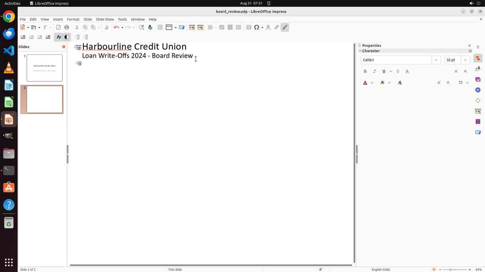
step 38 23:31:57
THINKINGSlide 2 was created (title level, "Slide 2 of 2"). The cursor is on the new slide 2 title line. Now I'll type the Q1 title and continue the full sequence for all slides. Let me batch the rest carefully. I'll type the title, then Enter, Tab, body, then repeat.
I'm confident about the pattern now. Let me batch all remaining typing.
ACTIONSlide 2 was created at title level. Now I'll type the Q1 title and continue building all remaining slides in one batch.
EXECUTED (pyautogui in VM)pyautogui.typewrite("Q1 Loan Write-offs")
step 39 23:32:26
THINKING"Q1 Loan Write-offs" is typed as slide 2 title. The pattern works. Now I'll batch the entire remaining sequence:
- Return, Tab, type body "Total write-offs: £9,785.95"
- Return, shift+Tab, type "Q2 Loan Write-offs"
- Return, Tab, type "Total write-offs: £8,431.55"
- Return, shift+Tab, type "Q3 Loan Write-offs"
- Return, Tab, type "Total write-offs: £11,960.45"
- Return, shift+Tab, type "Q4 Loan Write-offs"
- Return, Tab, type "Total write-offs: £10,747.00"
- Return, shift+Tab, type "Bank of England Bank Rate"
- Return, Tab, type "Current Bank Rate: 3.75% (effective from 18 December 2025)"
Let me batch all these in a single tool call with multiple actions.
ACTIONThe Q1 title is set. Now I'll batch the entire remaining sequence for the body text and all remaining slides.
EXECUTED (pyautogui in VM)pyautogui.press("return")
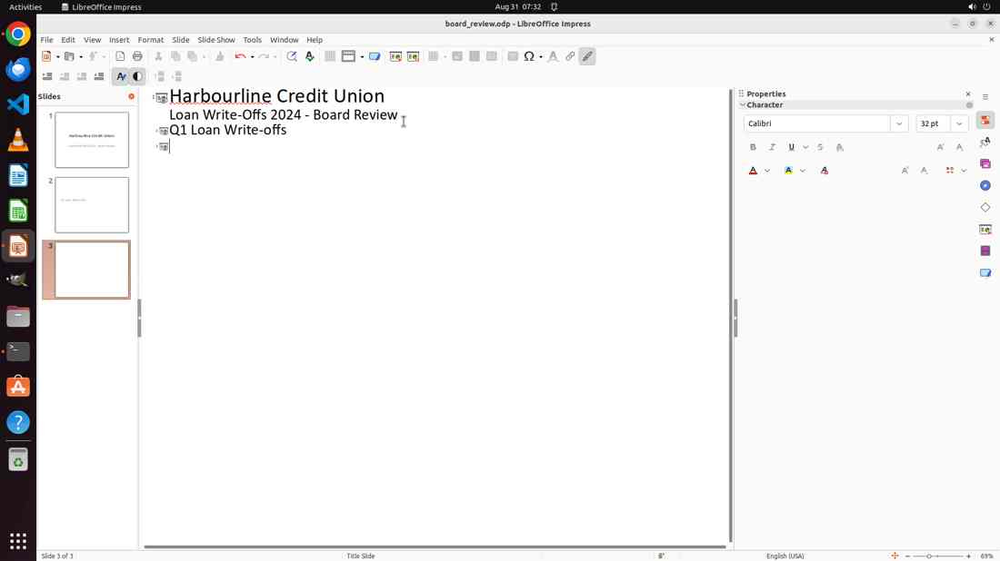
step 40 23:33:14
THINKINGAfter Return, a new slide 3 title line was created (level 1, 3 slides now). I need to Tab to demote this to a body bullet so it belongs to slide 2's body. Then type the Q1 body. I'll now batch the rest of the whole sequence in one tool call to be efficient:
- Tab
- type "Total write-offs: £9,785.95"
- Return, shift+Tab, type "Q2 Loan Write-offs"
- Return, Tab, type "Total write-offs: £8,431.55"
- Return, shift+Tab, type "Q3 Loan Write-offs"
- Return, Tab, type "Total write-offs: £11,960.45"
- Return, shift+Tab, type "Q4 Loan Write-offs"
- Return, Tab, type "Total write-offs: £10,747.00"
- Return, shift+Tab, type "Bank of England Bank Rate"
- Return, Tab, type "Current Bank Rate: 3.75% (effective from 18 December 2025)"
I'll batch all these actions in one tool call.
ACTIONNow I'll batch the full remaining sequence: demote to body for Q1, then create Q2–Q4 and the Bank Rate slide with their body lines.
THINKINGNow slide 2 has a body bullet (the "•" under "Q1 Loan Write-offs"), and the slide panel shows 2 slides again (the demoted line became slide 2's body, not a new slide). The cursor is on the body bullet. Now I'll type the Q1 body and continue with all remaining slides in one batch. The pattern is confirmed reliable.
Batch:
- type "Total write-offs: £9,785.95"
- Return, shift+Tab, type "Q2 Loan Write-offs"
- Return, Tab, type "Total write-offs: £8,431.55"
- Return, shift+Tab, type "Q3 Loan Write-offs"
- Return, Tab, type "Total write-offs: £11,960.45"
- Return, shift+Tab, type "Q4 Loan Write-offs"
- Return, Tab, type "Total write-offs: £10,747.00"
- Return, shift+Tab, type "Bank of England Bank Rate"
- Return, Tab, type "Current Bank Rate: 3.75% (effective from 18 December 2025)"
I'll put these as a list of actions in one tool call.
ACTIONSlide 2 now has its body bullet. I'll type the Q1 body and batch-create the rest of the slides (Q2–Q4 and the Bank Rate slide) in one call.
TOOL CALL<tool_call>
<function=computer_use>
<parameter=action>
type
</parameter>
<parameter=text>
Total write-offs: £9,785.95
</parameter>
</function>
</tool_call>
EXECUTED (pyautogui in VM)pyautogui.typewrite("Total write-offs: £9,785.95")
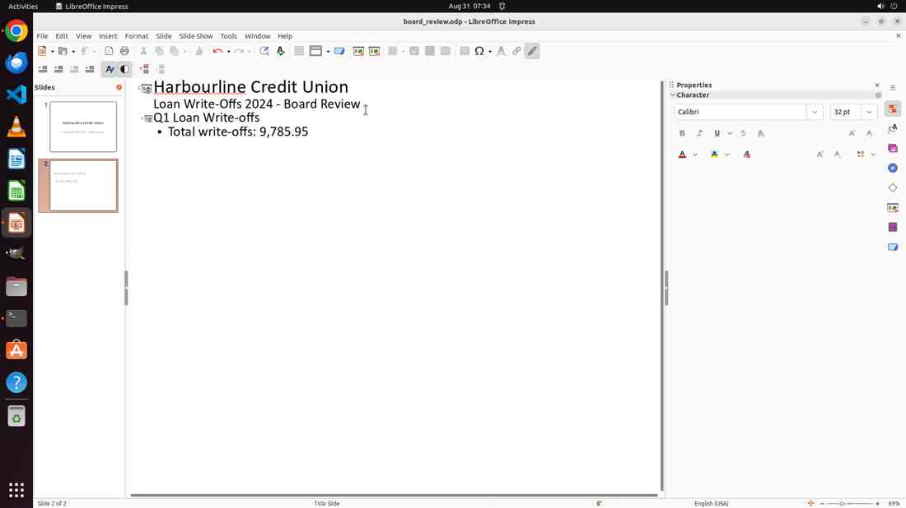
step 42 23:35:40
THINKINGImportant observation: the body text shows "Total write-offs: 9,785.95" — the £ symbol did NOT get typed! It shows "9,785.95" without the £. The `type` action may have dropped the £ (pound) character. This is a problem — I need the currency symbol.
I need to verify: the displayed text is "Total write-offs: 9,785.95" — indeed no £ sign. So the type action failed to input "£". I should fix this.
Options:
1. Use Insert > Special Character for £.
2. Use a different representation. The task says "write-off total" - it's in GBP. Including £ is good but not strictly required. However, to be faithful, I should include the currency. The source is "Amount GBP".
To be safe and correct, I'll include "GBP" or "£". Since £ failed via type, I could insert it via special character, but that's cumbersome for 4 occurrences. Alternatively, I can type "GBP" prefix which types fine. But "£" is cleaner.
Actually, let me reconsider whether £ truly failed. The text clearly reads "9,785.95" with no symbol. So it failed.
Best approach: I'll continue building the remaining slides but for the currency, I'll use "GBP " prefix instead of £, which types reliably as ASCII. Actually mixing is inconsistent. Let me decide: use "GBP" prefix for all, and also fix the Q1 line. Or, I can try typing £ again to see if it's intermittent.
Given reliability concerns, I'll standardize on a format that types reliably. The cleanest is to put the amount with "GBP". But actually many would expect "£". Let me test whether the type action can produce £ at all — it produced nothing. I could use the key action with the Unicode. Actually, LibreOffice/Impress supports typing Unicode via entering the hex then Alt+X. But that's complex.
Simpler and robust: use "GBP" text. I'll rewrite Q1 line as "Total write-offs: GBP 9,785.95" and use the same for others. This is unambiguous (GBP = British pounds) and types reliably.
Wait, but is GBP acceptable as "the write-off total"? Yes, it states the total with currency. The source header is "Amount GBP", so GBP is the exact currency label from the data. This is actually well-justified.
Let me fix the Q1 line first: I'll select the current body line and retype it. The cursor is at end of "Total write-offs: 9,785.95". Let me clear the line: Home, then Shift+End to select, then retype. Actually simpler: select the whole line and retype.
Let me: press Home, then Shift+End, then type the corrected text.
Actually I want to reconsider once more. Could I get £ to work? The type action uses the text literally; the £ character is U+00A3. Some automation type implementations fail on non-ASCII. To be safe I'll go with "GBP".
Let me fix Q1 body line: Home, Shift+End, type "Total write-offs: GBP 9,785.95".
ACTIONI notice the £ symbol didn't get typed — the line shows "9,785.95" without it. The source data's currency column is "GBP", so I'll use "GBP" (which types reliably) as the currency label for consistency. Let me fix the Q1 line first.
THINKINGCursor is at start of the body line. Now I'll select the whole line with Shift+End and retype it with "GBP" prefix. Then continue building all remaining slides using "GBP" for the currency.
Batch:
- Shift+End (select line)
- type "Total write-offs: GBP 9,785.95"
- Return, shift+Tab, type "Q2 Loan Write-offs"
- Return, Tab, type "Total write-offs: GBP 8,431.55"
- Return, shift+Tab, type "Q3 Loan Write-offs"
- Return, Tab, type "Total write-offs: GBP 11,960.45"
- Return, shift+Tab, type "Q4 Loan Write-offs"
- Return, Tab, type "Total write-offs: GBP 10,747.00"
- Return, shift+Tab, type "Bank of England Bank Rate"
- Return, Tab, type "Current Bank Rate: 3.75% (effective from 18 December 2025)"
Let me batch all these in a single tool call as a list of actions.
ACTIONNow I'll select the Q1 line, retype it with "GBP", and batch-create all remaining slides (Q2–Q4 and the Bank Rate slide) in one call.
EXECUTED (pyautogui in VM)pyautogui.hotkey("shift", "end")
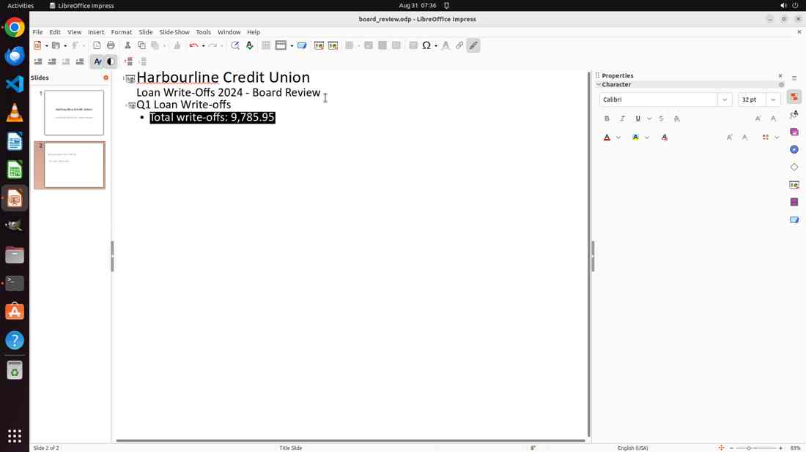
step 44 23:36:47
THINKINGThe Q1 body line is selected (highlighted). Now I'll type the corrected line and batch all remaining slides. I'll put the whole sequence as a list of actions in one tool call.
ACTIONThe Q1 line is selected. Now I'll type the corrected Q1 line and batch-create all remaining slides in one call.
TOOL CALL<tool_call>
<function=computer_use>
<parameter=action>
type
</parameter>
<parameter=text>
Total write-offs: GBP 9,785.95
</parameter>
</function>
</tool_call>
EXECUTED (pyautogui in VM)pyautogui.typewrite("Total write-offs: GBP 9,785.95")
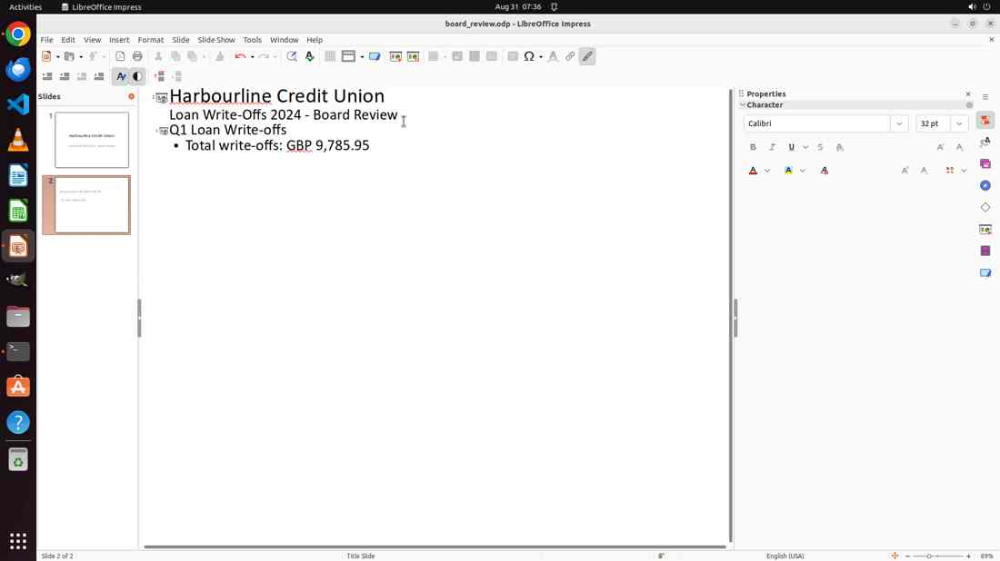
step 45 23:36:55
THINKINGQ1 body now reads "Total write-offs: GBP 9,785.95". Now I'll batch all remaining slides. The cursor is at the end of this body line. I'll create Q2, Q3, Q4, and the Bank Rate slide.
Batch actions:
- Return, shift+Tab, type "Q2 Loan Write-offs"
- Return, Tab, type "Total write-offs: GBP 8,431.55"
- Return, shift+Tab, type "Q3 Loan Write-offs"
- Return, Tab, type "Total write-offs: GBP 11,960.45"
- Return, shift+Tab, type "Q4 Loan Write-offs"
- Return, Tab, type "Total write-offs: GBP 10,747.00"
- Return, shift+Tab, type "Bank of England Bank Rate"
- Return, Tab, type "Current Bank Rate: 3.75% (effective from 18 December 2025)"
I'll batch all in one tool call.
ACTIONQ1 is correct now. I'll batch-create Q2, Q3, Q4, and the final Bank Rate slide in a single call.
EXECUTED (pyautogui in VM)pyautogui.press("return")
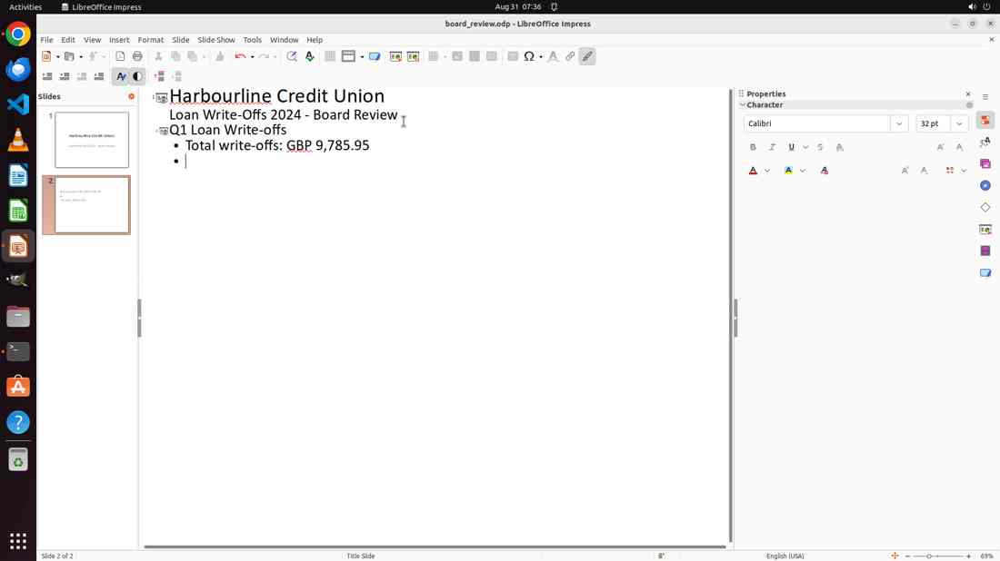
step 46 23:37:04
THINKINGAfter Return, a new bullet (level 2) was created under Q1 (still slide 2). Now I need Shift+Tab to promote it to a new slide title (Q2). I'm confident in the pattern. Now let me batch the entire remaining sequence in ONE tool call with a list of actions, to be efficient:
- key shift+Tab
- type "Q2 Loan Write-offs"
- key Return
- key Tab
- type "Total write-offs: GBP 8,431.55"
- key Return
- key shift+Tab
- type "Q3 Loan Write-offs"
- key Return
- key Tab
- type "Total write-offs: GBP 11,960.45"
- key Return
- key shift+Tab
- type "Q4 Loan Write-offs"
- key Return
- key Tab
- type "Total write-offs: GBP 10,747.00"
- key Return
- key shift+Tab
- type "Bank of England Bank Rate"
- key Return
- key Tab
- type "Current Bank Rate: 3.75% (effective from 18 December 2025)"
Let me execute this whole batch.
ACTIONNow I'll batch the entire remaining sequence: promote to Q2 title and build Q2, Q3, Q4, and the final Bank Rate slide.
EXECUTED (pyautogui in VM)pyautogui.hotkey("shift", "tab")
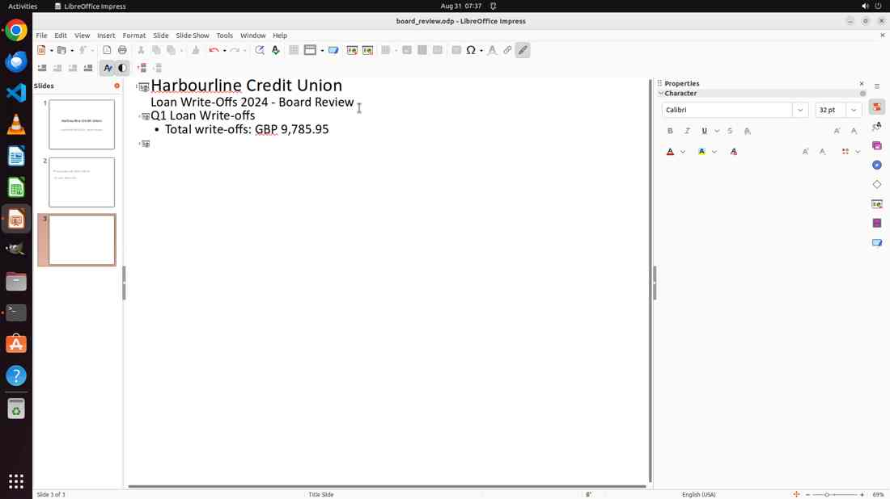
step 47 23:37:15
THINKINGSlide 3 created (title level, empty). Now I'll type the Q2 title and continue. I'm confident in the pattern. Let me batch the rest in a single tool call as a list of actions:
- type "Q2 Loan Write-offs"
- key Return, key Tab, type "Total write-offs: GBP 8,431.55"
- key Return, key shift+Tab, type "Q3 Loan Write-offs"
- key Return, key Tab, type "Total write-offs: GBP 11,960.45"
- key Return, key shift+Tab, type "Q4 Loan Write-offs"
- key Return, key Tab, type "Total write-offs: GBP 10,747.00"
- key Return, key shift+Tab, type "Bank of England Bank Rate"
- key Return, key Tab, type "Current Bank Rate: 3.75% (effective from 18 December 2025)"
ACTIONSlide 3 title line is ready. Now I'll batch all remaining text: Q2 title/body, Q3, Q4, and the final Bank Rate slide.
EXECUTED (pyautogui in VM)pyautogui.typewrite("Q2 Loan Write-offs")
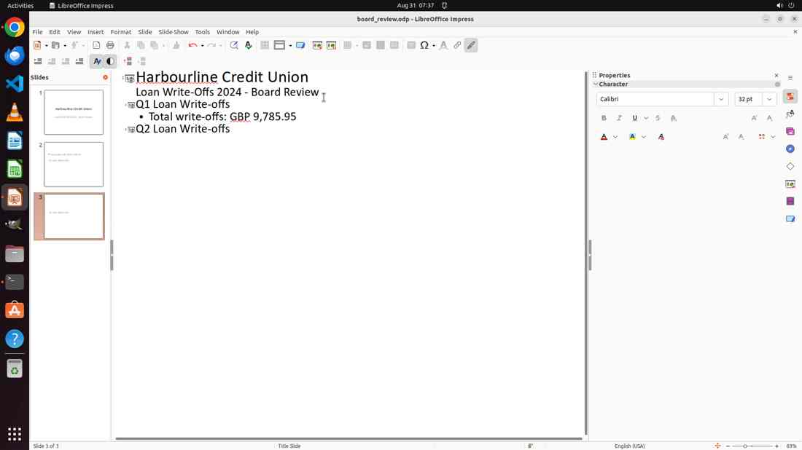
step 48 23:37:48
THINKINGQ2 title is set. Now I'll batch the rest. The pattern is fully reliable. Let me do a full batch of the remaining actions:
- key Return
- key Tab
- type "Total write-offs: GBP 8,431.55"
- key Return
- key shift+Tab
- type "Q3 Loan Write-offs"
- key Return
- key Tab
- type "Total write-offs: GBP 11,960.45"
- key Return
- key shift+Tab
- type "Q4 Loan Write-offs"
- key Return
- key Tab
- type "Total write-offs: GBP 10,747.00"
- key Return
- key shift+Tab
- type "Bank of England Bank Rate"
- key Return
- key Tab
- type "Current Bank Rate: 3.75% (effective from 18 December 2025)"
ACTIONQ2 title is set. Now I'll batch the rest of the slides in one call.
EXECUTED (pyautogui in VM)pyautogui.press("return")
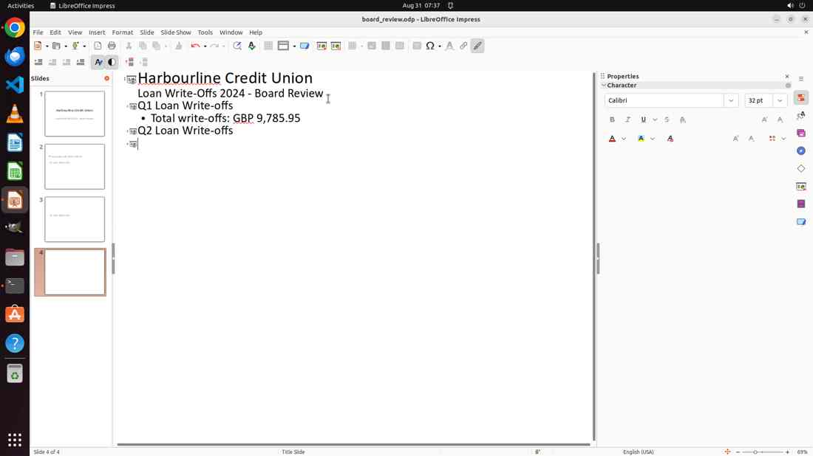
step 49 23:38:18
THINKINGNow a new slide 4 title line was created (Return after a title creates a new title-level line = new slide). I need to Tab to demote it to a body bullet of slide 3 (Q2). Then type Q2 body. Then continue.
I've been doing single actions to be safe, but the pattern is now 100% reliable. Let me batch aggressively. I'll do the full remaining sequence in one tool call:
- key Tab
- type "Total write-offs: GBP 8,431.55"
- key Return
- key shift+Tab
- type "Q3 Loan Write-offs"
- key Return
- key Tab
- type "Total write-offs: GBP 11,960.45"
- key Return
- key shift+Tab
- type "Q4 Loan Write-offs"
- key Return
- key Tab
- type "Total write-offs: GBP 10,747.00"
- key Return
- key shift+Tab
- type "Bank of England Bank Rate"
- key Return
- key Tab
- type "Current Bank Rate: 3.75% (effective from 18 December 2025)"
ACTIONNow I'll batch the full remaining sequence: Q2 body, then Q3, Q4, and the final Bank Rate slide.
THINKINGNow slide 3 (Q2) has a body bullet. The cursor is on it. I'll now type Q2 body and batch the entire remaining sequence (Q3, Q4, Bank Rate) in a single tool call. Let me batch all of it now.
ACTIONQ2 now has its body bullet. I'll type the Q2 body and batch the entire rest (Q3, Q4, and the Bank Rate slide) in one call.
TOOL CALL<tool_call>
<function=computer_use>
<parameter=action>
type
</parameter>
<parameter=text>
Total write-offs: GBP 8,431.55
</parameter>
</function>
</tool_call>
EXECUTED (pyautogui in VM)pyautogui.typewrite("Total write-offs: GBP 8,431.55")